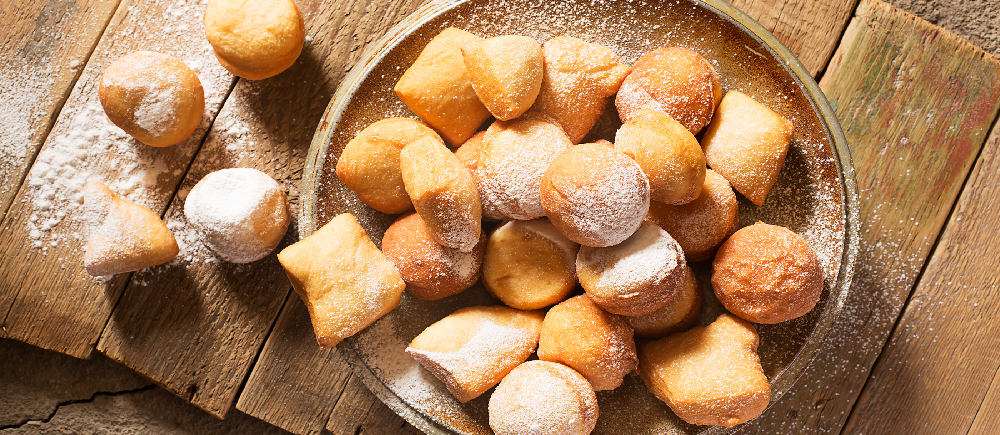

Baursak or baursaks are traditional pastries among the Turkic peoples. It is prepared from unleavened or, like the Kazakhs, yeast dough and served on holidays, for example, at weddings. The Kazakhs still have a wedding custom, when baursaks, along with coins, are scattered over the heads of the newlyweds.
Meal prep time : 1 hour 30 minutes
Servings : 6